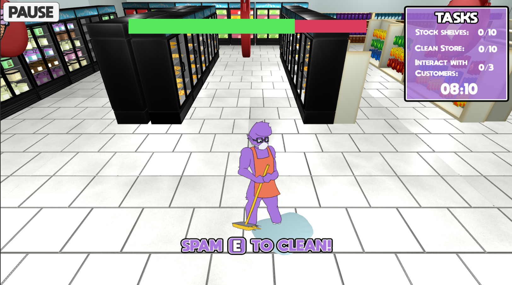
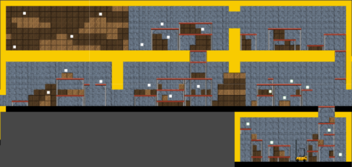
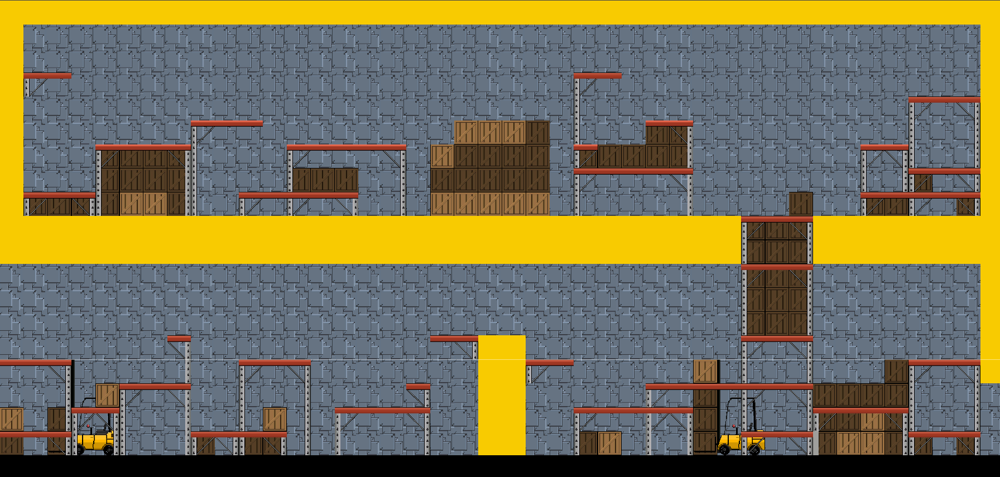

MoMart

This was the first game that I developed as part of the MI 445 Game Design Minor class, where you play as an average day retail worker employed at MoMart who is secretly a monster just trying to get by. For this game I designed and created the MoMart store and layout that the player is in. I really wanted to make sure that the level gave the player the feeling that they were walking around a retail store, however I didn't want the player to feel bored by this either. As a result I designed the layout of the store to be able to have a variety of different aisles with different items, as well as make sure the player wasn't only walking in a straight line to and from the objectives as that is not a fun experience. One other thing we created to make sure MoMart did not become monotoneus were NPC customers, each with their own minigame they let you play. Everyone helped with the process of making sure they felt fun and enjoyable which resulted in good breaks between the different tasks.


This is the second game that I am currently developing for my MI 445 class.